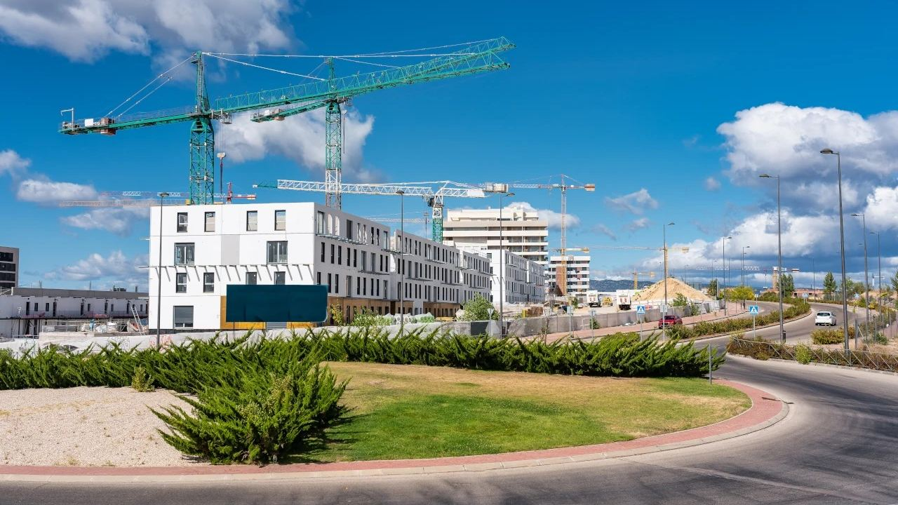
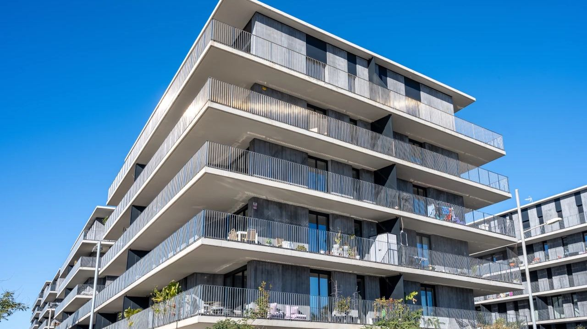
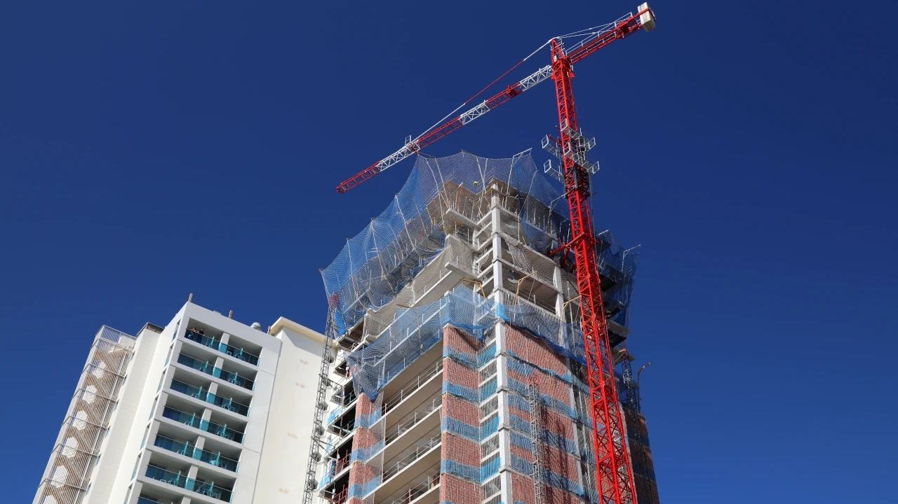
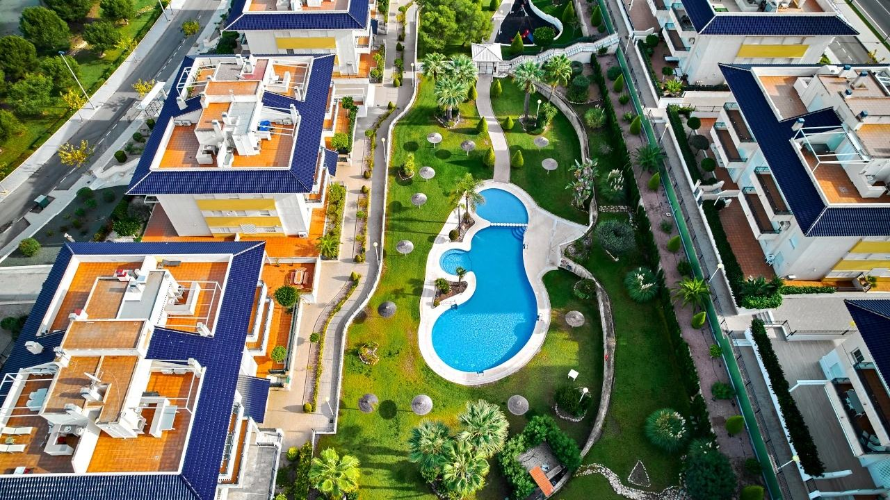
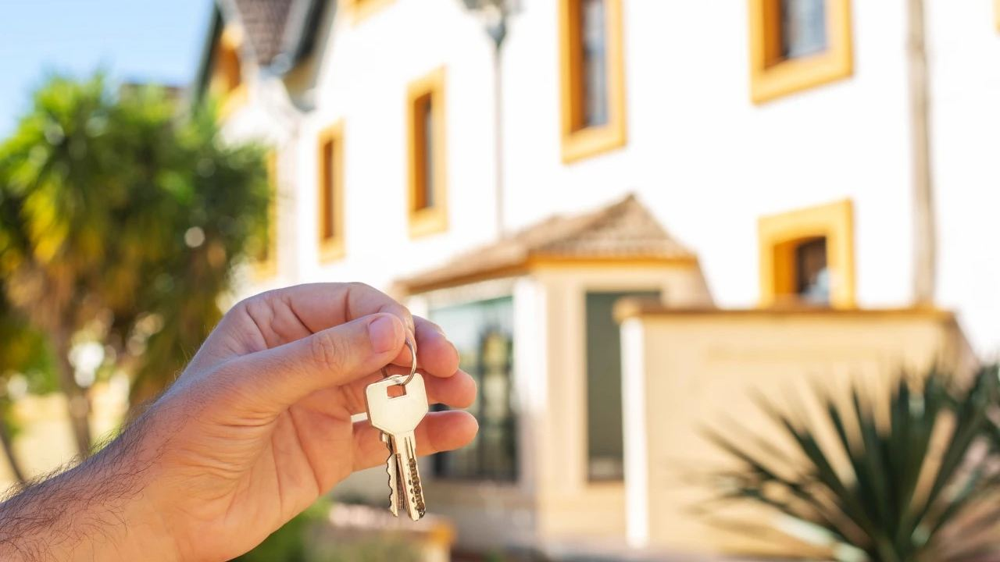
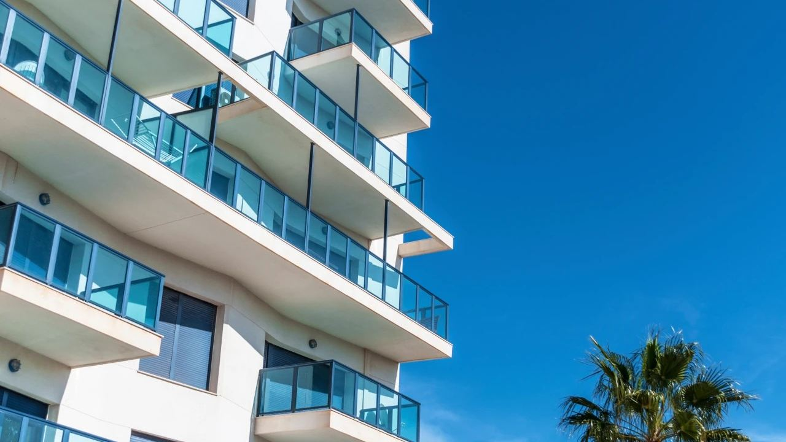

Kaufen · Neubau
Neubau in Spanien kaufen: Der Ablauf Schritt für Schritt
 Von Aleksandra Kobus · · aktualisiert · 4 Min. Lesezeit
Von Aleksandra Kobus · · aktualisiert · 4 Min. Lesezeit

Kurz gesagt: Der Kauf vom Bauträger in Spanien hat meist sechs Schritte: Reservierung, NIE und Bankkonto, privater Kaufvertrag, Ratenzahlungen während des Baus, Notartermin und Schlüsselübergabe. Jede Zahlung vor der Fertigstellung muss gesetzlich auf ein Sonderkonto fließen und durch eine Bankbürgschaft oder Versicherung abgesichert sein, sodass Sie Ihr Geld mit Zinsen zurückbekommen, wenn nicht fertig gebaut wird. Nach der Übergabe gilt eine Gewährleistung von 1 Jahr für Ausbaumängel, 3 Jahren für Mängel der Bewohnbarkeit und 10 Jahren für die Statik. Neubauten werden in Spanien schlüsselfertig verkauft, mit Küche, Bädern und meist Klimaanlage.
Immer mehr Immobilien an der spanischen Küste werden direkt vom Bauträger verkauft, oft noch vor dem Bau. Anders als in Deutschland, wo nach der MaBV nach Baufortschritt gezahlt wird, leisten Sie in Spanien Anzahlungen, die durch eine Bürgschaft gesichert sind. Der Kauf ist sicher, wenn Sie die Schritte und Ihre Rechte kennen. Beides erklären wir hier. Die Vor- und Nachteile gegenüber Bestandsimmobilien finden Sie unter Neubau oder Bestand.
Was Sie mit einem Neubau bekommen

- Schlüsselfertig: Neubauten werden bezugsfertig übergeben, mit Einbauküche, fertigen Bädern, Böden und an der Küste meist Klimaanlage.
- Niedrige Betriebskosten: gute Dämmung, effiziente Klimatechnik und oft Solarmodule. Neubauten haben meist die Energieklasse A oder B.
- Gemeinschaftsanlagen: viele Anlagen haben Pools, Gärten, Fitnessraum und gesicherte Stellplätze.
- Auswahl: Wer früh kauft, kann oft Etage, Blick und einige Materialien wählen.
Der Quadratmeterpreis liegt meist über dem von Bestandsobjekten, und beim Kauf vom Plan warten Sie auf die Fertigstellung.
Der Ablauf Schritt für Schritt
- Immobilie wählen und Bauträger sowie Projekt prüfen (siehe unten).
- Reservierung (contrato de reserva): Sie zahlen eine Anzahlung, oft 6.000 bis 20.000 €, und die Immobilie wird vom Markt genommen. Prüfen Sie, ob sie erstattet wird.
- NIE und Bankkonto: Sie brauchen eine NIE-Nummer und ein spanisches Bankkonto.
- Privater Kaufvertrag (contrato privado de compraventa), meist innerhalb eines Monats. Er regelt Preis, Zahlungsplan, Liefertermin und Baubeschreibung. Sie zahlen die erste Rate.
- Raten während des Baus. Üblich sind 20 bis 40 % vor der Fertigstellung und der Rest beim Notar, die Pläne unterscheiden sich aber.
- Notar und Schlüssel: Ist das Gebäude fertig und genehmigt, unterschreiben Sie die escritura beim Notar, zahlen den Rest und erhalten die Schlüssel. Danach wird die Urkunde auf Ihren Namen eingetragen.
Beim Neubau fallen 10 % Mehrwertsteuer (IVA) und die Stempelsteuer (AJD) an, 1,4 % in der Region Valencia und 1,2 % in Andalusien, dazu Notar-, Register- und Anwaltskosten. Eine Grunderwerbsteuer wie in Deutschland entfällt. Siehe Immobilienkauf in Spanien.
So ist Ihr Geld geschützt

Das spanische Recht schützt Käufer, die vor der Fertigstellung zahlen:
- Absicherung der Zahlungen: Alle Zahlungen vor der Fertigstellung müssen auf ein Sonderkonto gehen und durch eine Bankbürgschaft (aval bancario) oder eine Versicherung gedeckt sein. Wird die Immobilie nicht gebaut oder nicht fristgerecht geliefert, erhalten Sie Ihr Geld mit gesetzlichen Zinsen zurück. Verlangen Sie für jede Zahlung eine eigene Bürgschaft.
- Gewährleistung nach der Übergabe nach dem Baugesetz (LOE): 1 Jahr für Ausbaumängel, 3 Jahre für Mängel der Bewohnbarkeit wie Feuchtigkeit oder schlechte Dämmung und 10 Jahre für die Statik, abgesichert durch eine Pflichtversicherung (seguro decenal).
Was Sie vor der Unterschrift prüfen sollten

- Der Bauträger: wie lange er baut, fertige Projekte zum Besichtigen und seine finanzielle Lage.
- Die Baugenehmigung (licencia de obras) und dass das Grundstück auf den Bauträger eingetragen ist.
- Die Bürgschaft: welche Bank oder Versicherung und auf welches Sonderkonto Sie zahlen.
- Der Vertrag: Preis mit oder ohne IVA, Zahlungsplan, Liefertermin und Folgen einer Verspätung, Baubeschreibung (memoria de calidades), Pläne sowie Stellplatz oder Abstellraum.
- Laufende Kosten: geschätzte Gemeinschaftskosten und Grundsteuer IBI.
Ein unabhängiger Anwalt sollte den Vertrag vor der Unterschrift prüfen, idealerweise einer, der auch Deutsch spricht. Wir arbeiten mit solchen Anwälten zusammen.
Fertigstellung und Übergabe

Ist das Gebäude fertig, erhält der Bauträger die Fertigstellungsbescheinigung und die Erstbezugsgenehmigung bzw. -erklärung der Gemeinde. Dann können Sie beim Notar unterschreiben.
- Begehen Sie die Immobilie vor oder bei der Übergabe und notieren Sie alle Mängel in einem Mängelprotokoll. Der Bauträger muss sie beheben.
- Nehmen Sie die Unterlagen mit: Energieausweis, Gebäudebuch (libro del edificio) und Garantien für die Geräte.
- Melden Sie die Versorger auf Ihren Namen an: Strom, Wasser und Internet. Dabei helfen wir.
Einen Neubau vermieten
Neubauten lassen sich gut vermieten: Mieter schätzen niedrige Nebenkosten, modernes Design und Gemeinschaftsanlagen, und der Eigentümer hat jahrelang kaum Reparaturen. Für Ferienvermietung prüfen Sie vor dem Kauf die regionale Lizenz und die Regeln der Anlage, denn manche Gemeinschaften verbieten sie inzwischen. Siehe Regeln zur Kurzzeitvermietung und Langzeitmiete.
Häufige Fragen
Ist der Kauf vom Plan in Spanien sicher?
Ja, wenn Ihre Zahlungen abgesichert sind. Gesetzlich muss jede Zahlung vor der Fertigstellung auf ein Sonderkonto gehen und durch Bankbürgschaft oder Versicherung gedeckt sein. Wird nicht geliefert, erhalten Sie das Geld mit Zinsen zurück.
Wie viel zahle ich vor der Fertigstellung?
Das hängt vom Bauträger ab. Üblich ist eine Reservierung von 6.000 bis 20.000 €, dann 20 bis 40 % des Preises während des Baus und der Rest beim Notar.
Welche Steuern fallen beim Neubau an?
10 % IVA auf den Preis und die Stempelsteuer AJD von 1,4 % in der Region Valencia bzw. 1,2 % in Andalusien, dazu Notar-, Register- und Anwaltskosten.
Welche Gewährleistung habe ich beim Neubau?
Ein Jahr für Ausbaumängel, drei Jahre für Mängel der Bewohnbarkeit und zehn Jahre für die Statik nach dem spanischen Baugesetz.
Werden Neubauten in Spanien schlüsselfertig verkauft?
Ja. Sie haben Einbauküche, fertige Bäder und Böden und an der Küste meist Klimaanlage. Möbel sind in der Regel nicht enthalten.
Bekomme ich eine Hypothek für einen Kauf vom Plan?
Ja. Die Hypothek wird meist bei der Fertigstellung beim Notar unterschrieben. Nichtresidenten erhalten in der Regel 60 bis 70 % des Kaufpreises.
Den richtigen Neubau mit uns finden

Wir kennen die Bauträger an der Costa Blanca und der Costa del Sol und zeigen Ihnen, welche Projekte verlässlich sind. Wir prüfen Bürgschaften und Vertrag mit Ihnen und begleiten Sie bis zur Übergabe. Kontaktieren Sie uns.
Quellen: BOE – Ley 38/1999 de Ordenación de la Edificación (building warranties) · BOE – Ley 20/2015, disposición adicional primera (guarantee of off-plan payments)